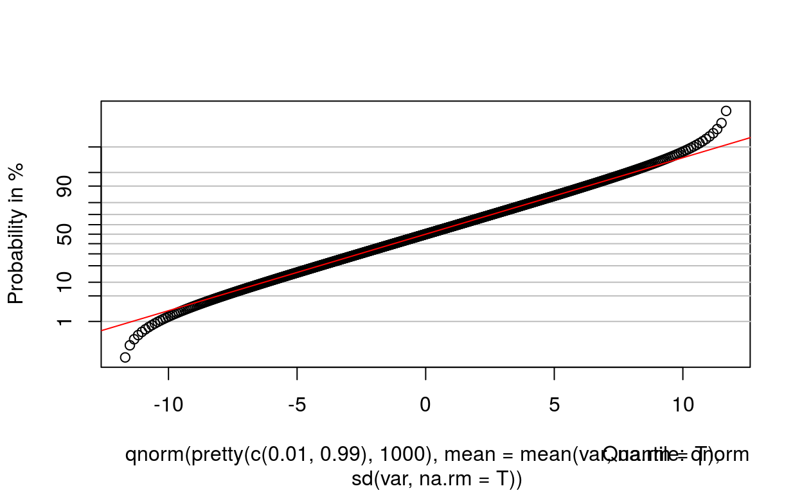
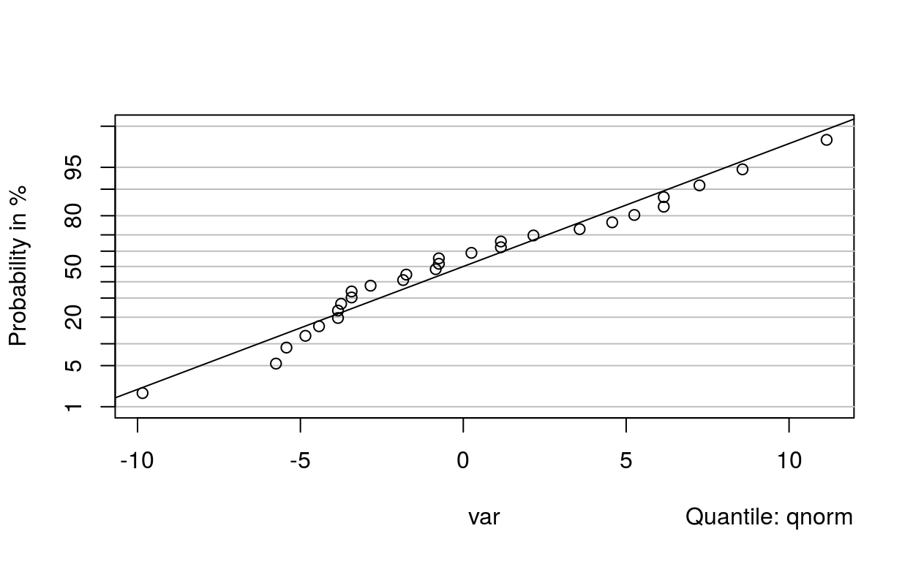
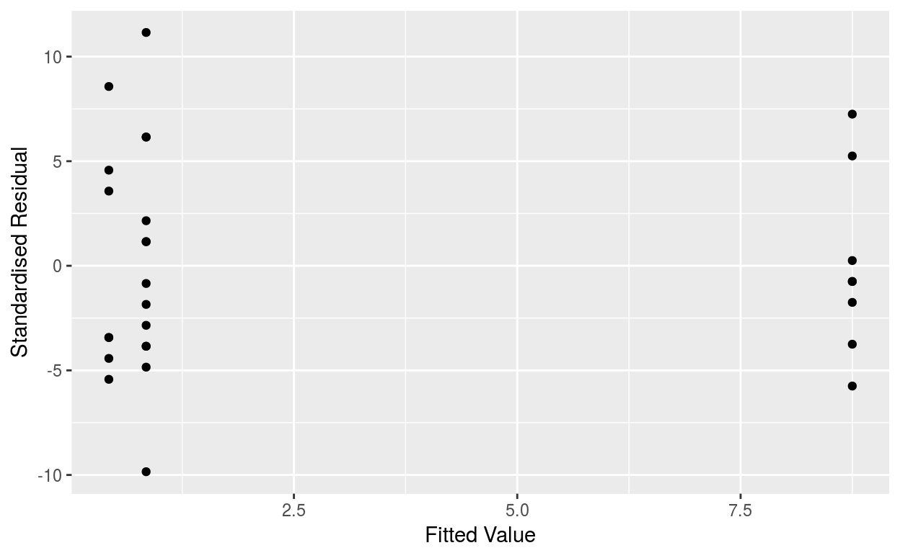
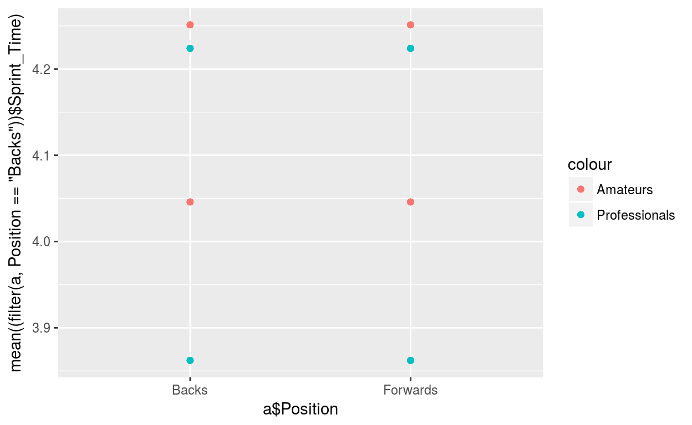

The analyses presented to date involving Between Subject Factors have all been simple two sample comparisons from observational studies (e.g. Youth and Elite soccer players) or designed experiments where the Between Subject Factor had two levels (e.g. Intervention and Controls). In this chapter the General Linear Model (GLM) is presented as a method for comparing the mean of a continuous response variable across one or more Between Subject Factors, each with an arbitrary number of levels, and if necessary while adjusting for one or more continuous explanatory variables.
Illustrations were given in Chapters 4 and 5 where the main aim was to compare means of samples from two distinct populations in an observational study or the means of two levels for a Between Subject Factor in a designed study. In both cases interval estimation was used to quantify the likely difference between the population means or the Two-Sample t-test was used if a hypothesis testing approach was preferred. Of course many studies will involve comparisons of three or more means, be it from observational or designed experiments. Therefore an extension to the two sample comparison is needed. The standard method used has the somewhat strange title of Analysis of Variance (ANOVA) as it turns out that the variability in the observations can be split up into components some of which reflect differences in population means among the levels of Between Subject Factors. Although t-tests (Two-Sample and Paired-Sample) were the key hypothesis tests for Chapter 5, the F-test, named after the (in)famous English statistician, Sir Ronald Fisher, is the basic hypothesis test for ANOVA’s. Despite a recurring theme in this text book is to avoid hypothesis tests if at all possible, ANOVA does require hypothesis tests at least at the preliminary stage of the analysis. Once evidence is provided that there are significant differences among the levels of one or more Between Subject Factors, interval estimation is used to estimate the which levels have different population means.
The simplest ANOVA involves a single Between Subject Factor (with three or more levels) and is known as a One-Way ANOVA. The ANOVA procedure however is very flexible and can incorporate as many Between Subjects Factors (each with an arbitrary number of levels) as needed. Indeed it can be extended to allow for the adjustment of continuous explanatory variables (often referred to as covariates) which may influence the response variable.
ANOVA is based on the General Linear Model (GLM) which involves a general modelling framework for the comparison of means while allowing for the inclusion of as many Between Subject Factors and covariates as required, for any imbalance in the design (i.e. unequal sample/sub-sample sizes) and for any dependency within the observations such as multiple measurements on the same subject under different conditions or at different times into the study (see Chapters 9 to 11).
Despite apparent differences in study designs across the scenarios covered in this chapter, all of the analyses presented can be performed using a GLM routine available in any Statistical Software package. This avoids any confusion that may arise when trying to identify the appropriate ANOVA routine when analysing data – go straight for the GLM!
Steps involved in fitting a General Linear Model with Between Subject Factors
The GLM is first demonstrated in a study involving a single Between Subject Factor with three levels. Following this, more complicated illustrations are introduced involving two or more Between Subject Factors as well as studies with Between Subject Factors and covariates.
The simplest application of a General Linear Model involves testing for significant differences among population means across 3 or more levels of a Between Subject Factor, a so called ‘One Way’ ANOVA. A more accurate description would be ‘One-Factor’ ANOVA as the ‘One’ refers to the fact that there is a single Between Subject Factor of interest.
Such data may arise from observational studies where samples are taken from three or more different populations. For example, a sports scientist is interested in comparing the climbing specific finger strength of three different grades of climber. She takes a random sample from each grade and records the Grip Strength and grade for each climber in each sample. Do the data provide evidence of a significant difference in the mean Grip Strength in the three populations of climbers?
Background: In the sport of rock climbing the steeper the rock face is, generally, the more difficult the climb is graded. Climbs are graded from Moderate to Extreme (E), with E1 being the easiest climb on this E scale. A grading of Severe is between Moderate and Extreme and is not deemed to be a high climbing standard. It is reasonable to speculate that high levels of climbing specific finger strength and perhaps Grip Strength are of great importance in elite climbing.
Study Description: Independent samples of ten Elite (i.e. have successfully completed a climbing standard of ‘E1’ in the last 12 months), ten Recreational (i.e. have successfully completed a climb no harder than ‘Severe’ in the last 12 months) and ten Non-climbers (i.e. Controls) had the Grip Strength of their (dominant) right hand measured, as well as having their Body Mass recorded. All subjects were male.
Aim: To compare average Grip Strength of the (dominant) right hand among the three populations of male climbers.
Plot a box plot of Grip_Strength by Climber_Typeggplot(data = GRIP_STRENGTH_AND_MASS) +
...ggplot(data = GRIP_STRENGTH_AND_MASS) +
geom_boxplot(mapping = aes(x = Climber_Type, y = Grip_Strength)) +
coord_flip()ggplot(data = GRIP_STRENGTH_AND_MASS) +
geom_boxplot(mapping = aes(x = Climber_Type, y = Grip_Strength)) +
coord_flip()strict_check(success = "")Remember that a box plot displays (amongst other things) the sample median. However, if each sample did arise from a Normal distribution (a necessary assumption for a One-Way ANOVA which is considered later in this section) then the sample mean and median should be quite similar.
Summary of Grip_Strength variableThe relevant Null and Alternative Hypothesis for this example are H0: The population mean Grip Strengths are the same for the three Climber Types; H1: The population mean Grip Strengths are not all the same for the three Climber Types.
General Linear Model: Grip_Strength versus Climber_Type
##
## Call:
## lm(formula = Grip_Strength ~ Climber_Type, data = GRIP_STRENGTH_AND_MASS)
##
## Residuals:
## Min 1Q Median 3Q Max
## -167.69 -51.48 29.42 56.63 112.78
##
## Coefficients:
## Estimate Std. Error t value Pr(>|t|)
## (Intercept) 475.62 26.16 18.183 <2e-16 ***
## Climber_TypeElite 79.43 36.99 2.147 0.0409 *
## Climber_TypeRecreational 14.71 36.99 0.398 0.6940
## ---
## Signif. codes: 0 '***' 0.001 '**' 0.01 '*' 0.05 '.' 0.1 ' ' 1
##
## Residual standard error: 82.72 on 27 degrees of freedom
## Multiple R-squared: 0.162, Adjusted R-squared: 0.09995
## F-statistic: 2.61 on 2 and 27 DF, p-value: 0.09197The output from the model is quite forbidding at first glance. However, the key piece of information is the P-value (highlighted in bold italics for convenience). Since the P-value here (0.092) is greater than 0.05, the Null hypothesis of equal population mean Grip Strengths cannot be rejected. It must therefore be concluded that there are no significant differences among the population mean grip strengths of the 3 Climber Types.
Conclusion: There was no convincing evidence (P=0.092) of any significant difference in mean Grip Strength between the populations of Elite, Recreational and Non-climbers.
The second illustration in this section involves data arising from a Completely Randomised Design with one Between Subject Factor with three levels.
Aim: To determine which, if either, of the relaxation methods (Meditation or Progressive Muscular Relaxation (PMR) significantly reduces Exercise Heart Rate on average compared to Controls over a two week period.
Plot a boxplot of heart Reduction by Treatmentggplot(data = RELAXATION,...) +
...ggplot(data = RELAXATION, mapping = aes(x = Treatment, y = Reduction)) +
geom_boxplot() +
coord_flip()ggplot(data = RELAXATION, mapping = aes(x = Treatment, y = Reduction)) +
geom_boxplot() +
coord_flip()strict_check(success = "")model <- ...
summary(model)model <- lm(Reduction~Treatment,data = RELAXATION)
summary(model)model <- lm(Reduction~Treatment,data = RELAXATION)
summary(model)strict_check(success = "Since the P-value from the One-Way ANOVA (P=0.004) is much smaller than 0.05, the Null Hypothesis of all three population mean Reductions in Heart Rate being equal can be rejected and therefore it can be concluded that there are some differences in the population mean responses to the different Treatments.
Having established the presence of some differences among the Treatments it is necessary to identify which Treatments are significantly different and to quantify the likely difference in mean Heart Rate Reduction between the Treatments. This is achieved by using a Multiple Comparisons procedure to generate a set of simultaneous interval estimates for all the pair-wise comparisons (i.e. for the differences in population mean Reduction in Heart Rate between each pair of Treatments).")The procedure can be carried out using either hypothesis tests or interval estimates but the preferred approach in this text book is, as always, the latter. Any pair-wise comparison that returns an interval estimate which does not contain zero provides evidence that the pair of population means are significantly different.
Remember that there is a 5% probability of any 95% Confidence Interval not containing the true population value that it is intended to contain. So, if many 95% Confidence Intervals for pair-wise comparisons are considered at the one time, then there will be a much greater probability than 5% that at least one of these intervals will not contain the true difference in the appropriate population means. One consequence of this is that there are likely to be too many spuriously declared differences among the population means and hence no agreement with the One-Way ANOVA. An adjustment is needed therefore to the intervals from each pair-wise comparison to ensure that the conclusions about pair-wise differences agree with the conclusion from the one-way ANOVA. This adjustment basically ensures that, when all the pair-wise comparisons are looked at together, there is at least a 95% probability that all the relevant intervals contain their true population mean differences or equivalently that there is at most a 5% chance of a spuriously declared difference in any paired comparison when in fact there are no differences among any of the population means (and hence will be compatible with the conclusion to a One-Way ANOVA with a 5% significance level).
The merits of two of the more popular tests namely the Bonferroni and Tukey procedures are now discussed. Both methods provide a set of interval estimates of the difference which are, in both cases, of the form
difference in sample means +/- a multiple of the ese of the difference
The only difference between the Bonferroni and Tukey methods is the choice of multiple used in the calculation.
The Bonferroni method (Carlo Bonferroni 1892-1960) is quite simple: instead of generating a separate 95% Confidence Interval for each pair-wise comparison, each interval is made wider so collectively the set of intervals has a ‘collective’ confidence of 95%. The phrase ‘simultaneous confidence interval’ is often used to describe such a set of pair-wise intervals.
For example, if four pair-wise comparisons are required and a simultaneous confidence of 95% is required the Bonferroni method adjusts each comparison/interval estimate’s confidence coefficient by calculating 100*(1 - 0.05/4) = 98.75% i.e. calculate separate 98.75% confidence intervals for each pair-wise comparison.
The Tukey (John Tukey, 1915-2000) procedure works on a slightly different (but more complicated) method for determining the multiple for each confidence interval while controlling for the number of intervals required. The Tukey approach is considered a less conservative approach than the Bonferroni method, especially when a small number of intervals are needed. For this reason, the Tukey method is generally preferred. The Bonferroni method however is easier to calculate in practice (as later illustrations will highlight).
Tukey 95.0% Simultaneous Confidence Intervals
## Tukey multiple comparisons of means
## 95% family-wise confidence level
##
## Fit: aov(formula = Reduction ~ Treatment, data = RELAXATION)
##
## $Treatment
## diff lwr upr p adj
## Meditation-Control 7.9038462 2.062528 13.745164 0.0066563
## PMR-Control -0.4175824 -6.511719 5.676554 0.9840790
## PMR-Meditation -8.3214286 -15.049173 -1.593684 0.0132973Notice that the confidence intervals are given the label “Simultaneous Confidence Intervals” to highlight the fact that the confidence associated with the set of all three intervals is (at least) 95%.
The first interval is for Meditation minus Control and is 2.1 to 13.7 b.min-1 which is entirely positive. Therefore, it can be concluded that the mean Reduction in Heart Rate is significantly greater for Meditation compared to Controls (i.e. Meditation results in a larger reduction in mean Heart Rate compared to ‘No Treatment’ of at least 2.1 b.min-1 and at most 13.7 b.min-1). As the second interval does contain zero, there is no strong evidence that the PMR is any more or less effective than ‘No Treatment’ in terms of mean reduction in Heart Rate. The fact that the third interval is entirely negative, provides evidence that Meditation also does significantly better than PMR in terms of average reduction in Heart Rate (i.e. the mean reduction in Heart Rate for Meditation subtracted from the mean reduction in Heart Rate for PMR is negative, hence the mean reduction for Meditation must be larger than for PMR).
More importantly, these intervals give some idea of the magnitude of the ‘benefit’ of Meditation in that it is likely to reduce mean Heart Rate between 2 and 14 beats.min-1 more than ‘No Treatment’ and between 2 and 15 beats.min-1 more than PMR.
Conclusion: This study provided evidence of a significant difference in mean Heart Rate Reduction across the three Treatments of interest (P=0.004). In particular, Meditation had a positive effect on reducing Heart Rate by between 2 and 13 beats.min-1 on average, when compared to Controls and by between 2 and 15 beats.min-1 on average, when compared to those using PMR. There was no evidence of a significant difference between the Controls and those using PMR. As a suitable summary of the conclusion it is worth writing down the names or letters pertaining to each Treatment in order of increasing sample mean Heart Rate Reduction and underlining pairs of variables that are not significantly different.
The assumptions for a One-Way ANOVA is that the
the underlying populations are Normally distributed with equal standard deviations but possibly different means. In a Designed Experiment: the underlying population is Normally distributed with equal standard deviations but possibly different means for each Between Subject Factor level.
In the last chapter hypothesis tests of equality of population standard deviations (or variances) were not recommended as such tests tend not to be particularly powerful when used on small samples. Thankfully the GLM is robust to non-equal standard deviations in particular when there are equal numbers in each sample (or sub-sample) but not so robust if the sample sizes are unequal. A rough rule of thumb to consider is that differences in sample standard deviations are only a concern if the largest of the sample standard deviations is larger than twice the smallest standard deviation. In the Grip Strength Illustration, the largest standard deviation (96.5) is less than twice the smallest (2x 63=126) and the assumption of equality of population standard deviations is deemed reasonable. The same applied in the Relaxation and Running Performance Illustration as the sample standard deviations were similar in each of the three Treatments.
The Normal distribution assumption can be checked informally using box plots by looking for symmetry in each sample separately. A better approach however is to use residual plots in a similar manner to that presented for regression models in Chapter 5. A residual in a GLM is the difference between observed and expected values for each observation e.g. each individual Grip Strength measurement minus the respective sample mean.
Normal probability plot 
##
## Anderson-Darling normality test
##
## data: var
## A = 0.4927, p-value = 0.2002Versus fits 
There is nothing in these plots to raise any concerns regarding the underlying model assumptions.
A Two-Way ANOVA is an extension of One-Way ANOVA allowing the researcher to quantify the effect of two Between Subject Factors. Once again the model can be fitted using a GLM and including a second Between Subject Factor. The added advantage of determining whether the combined effect is greater than the sum of the two separate effects i.e. an interaction is present.
In Illustration 3.4.3, an observational study was introduced where data on 145 Males and 140 Females were recorded to investigate whether or not participating in Regular exercise would increase a person’s Well-being (as measured on a subjective Visual analogue scale). There are three key questions to be answered in the analysis:
The first two questions relate to comparing the difference between levels of the Between Subject Factor while both forms of the third question relate to comparing the difference of differences i.e. is the difference between the levels of one of the Between Subject Factors comparably across the levels of the other.
These three questions are often referred to in statistical jargon as:
and iii) or iii*) Is there a significant interaction between Regular
Exercise and Sex? A two-way ANOVA offers an improvement over a One-Way ANOVA as the two Between Subject Factors are studied simultaneously. The procedure is similar to a One-Way ANOVA in that P-values are used to provide evidence as to whether differences in the sample means are significant. Once again Multiple Comparisons (where appropriate) are used to provide interval estimates of the significant Factor level differences in the population.
The following steps are needed to carry out a Two-Way ANOVA:
The first illustration presented is an observational study followed by an illustration relating to a Designed experiment.
Background: Speed is important in rugby for attack (in an attempt to score a try) and defence (to prevent a try). It is of interest to determine if one of the characteristics that distinguishes professional and amateur rugby players, is sprint speed. In addition, it is considered worthwhile to determine if there is a consistency between forwards and backs i.e. are professional forwards as well as backs faster than their amateur counterparts?
Study Description: A sample of 12 backs and 12 forwards were selected at random from an amateur and a professional rugby team. The players were asked to sprint over a distance of 20 metres from a standing start. There are two Factors of interest, namely Status (Amateur and Professional) and Position (Backs and Forwards).
Aim: The researcher has specified that she is only interested in comparing the squads to each other (i.e. Amateur Backs to Amateur Forwards and Professional Backs to Professional Forwards) and the positions to each other (i.e. Amateur Backs to Professional Backs and Amateur Forwards to Professional Forwards).
Plot a boxplot of Sprint_Time by Status and Positionggplot(data = RUGBY_SPRINT_TIME) +
...ggplot(data = RUGBY_SPRINT_TIME) +
geom_boxplot(mapping = aes(x = Status, y = Sprint_Time)) +
coord_flip() +
facet_grid(. ~ Position) + facet_grid(. ~ Position)strict_check(success = "")The sample of Professional Backs was 0.18 seconds faster on average when compared to the Amateur Backs while the difference in the corresponding Forwards was considerably less at 0.03 seconds. These differences suggest the presence of an interaction, as the difference in the mean response within position is not the same for the Amateurs when compared to the Professionals
General Linear Model of Sprint_Time versus Status and Positionmodel <- ...
summary(model)model <- lm(Sprint_Time~Status+Position,data = RUGBY_SPRINT_TIME)
summary(model)model <- lm(Sprint_Time~Status+Position,data = RUGBY_SPRINT_TIME)
summary(model)strict_check(success = "There is evidence of a significant interaction between the two Factors (P=0.006). As the interaction term is significant the remaining task is to identify which Status/Position combinations are responsible for the significant interaction term. There is one observation deemed ‘unusual’ namely an Amateur Back who is faster, when compared to the average speed of the other Backs, than the Professionals. ")There are six possible comparisons available if all pair-wise comparisons are of interest. As the researcher specified before the study that she was only interested in comparing the Positions across Status to each other only four comparisons are needed.
Contrast
(Backs – Forwards) P-value
Amateurs (-0.30, -0.11) <0.001 Professionals (-0.48, -0.25) <0.001
(Amateurs - Professionals)
Backs ( 0.07, 0.30) <0.001 Forwards (-0.06, 0.12) 0.43
The first interval is strictly negative providing evidence that the mean Sprint Time is higher (i.e. slower) for Forwards compared to Backs in the population of Amateur players.
There is a significant difference in Sprint Time when Position is compared in the Professionals as the interval does not contain zero.
A difference in mean speed is only noticeable however when comparing Amateur and Professional Backs where the Professional Backs tend to be faster on average. There was no significant difference between Professional and Amateur forwards. This interval reflects the fact that any suggestion of Professional rugby players being significantly quicker, on average, compared to Amateur rugby players is only evident amongst the Backs.
Conclusion: This study provided evidence of a significant difference in mean Sprint Time between Amateur and Professional rugby players where Backs were significantly faster than Forwards in both Amateur and Professional players (P<0.001 for both) and Professional Backs are significantly faster than Amateur Backs (P<0.001). There was no significant difference between Amateur and Professional Forwards (P=0.43) however. In particular, the Professional backs are likely to be between 0.25 to 0.48 seconds quicker on average compared to Professional Forwards and between 0.07 and 0.30 seconds faster, on average, when compared to Amateur Backs. The fact that the Professional Backs are faster than their counterparts is highly suggestive that differences in sprint speed are a distinguishing Factor between elite and non-elite players in the Backs. Similarly, Backs (Professional and Amateur) will generally have a sprint speed advantage when they encounter Forwards.
A Two-Way ANOVA assumes that all the observations are independent of each other; the underlying distribution of the response variable of interest for any combination of the two Factors is Normal; all the population standard deviations (for the different combinations) are the same but the population means may be different.
The model is quite robust to departures from Normality while the equality of the standard deviations (spreads) rule of thumb applies again; this assumption is only of concern if the largest of the sample standard deviations is no more than twice the smallest.
As in a One-Way ANOVA, the simplest way of checking the Normality and equal spreads assumption is by means of box plots - simply ensure that each sample median is roughly in the middle of each box (Normality) and that the lengths of the boxes are all about the same (Equal Spreads). The summary statistics and box plots presented for the Sprint Time comparison suggest that the Normality and equal spreads assumptions appear adequate.
Normal probability plot of the residualsa <- filter(RUGBY_SPRINT_TIME,Status == "Amateur")
p <- filter(RUGBY_SPRINT_TIME,Status == "Professional")a <- filter(RUGBY_SPRINT_TIME,Status == "Amateur")
p <- filter(RUGBY_SPRINT_TIME,Status == "Professional")
var<- c(p$Sprint_Time-(4.00676-0.10545),a$Sprint_Time-(4.00676))
p<-probplot(qnorm(pretty(c(0.01,0.99),1000),mean=mean(var,na.rm=T),sd(var,na.rm=T)))
probplot(var,line=F)
lines(p)
ad.test(var)var<- c(p$Sprint_Time-(4.00676-0.10545),a$Sprint_Time-(4.00676))
p<-probplot(qnorm(pretty(c(0.01,0.99),1000),mean=mean(var,na.rm=T),sd(var,na.rm=T)))
probplot(var,line=F)
lines(p)
ad.test(var)strict_check(success = "")a <- filter(RUGBY_SPRINT_TIME,Status == "Amateur")
p <- filter(RUGBY_SPRINT_TIME,Status == "Professional")
ggplot() +
geom_point(mapping = aes(x = 4.00676, y = a$Sprint_Time-(4.00676))) +
geom_point(mapping = aes(x = 4.00676-0.10545, y = p$Sprint_Time-(0.8462-0.4176))) +
labs(x = "Fitted Value", y = "Standardised Residual")a <- filter(RUGBY_SPRINT_TIME,Status == "Amateur")
p <- filter(RUGBY_SPRINT_TIME,Status == "Professional")
ggplot() +
geom_point(mapping = aes(x = 4.00676, y = a$Sprint_Time-(4.00676))) +
geom_point(mapping = aes(x = 4.00676-0.10545, y = p$Sprint_Time-(0.8462-0.4176))) +
labs(x = "Fitted Value", y = "Standardised Residual")ggplot() +
geom_point(mapping = aes(x = 4.00676, y = a$Sprint_Time-(4.00676))) +
geom_point(mapping = aes(x = 4.00676-0.10545, y = p$Sprint_Time-(0.8462-0.4176))) +
labs(x = "Fitted Value", y = "Standardised Residual")strict_check(success = "")Bonferroni 95.0% Simultaneous Confidence Intervals
##
## Posthoc multiple comparisons of means : Bonferroni
## 95% family-wise confidence level
##
## $Status
## diff lwr.ci upr.ci pval
## Professional-Amateur -0.1054505 -0.1602664 -0.05063469 0.00035 ***
##
## $Position
## diff lwr.ci upr.ci pval
## Forwards-Backs 0.283501 0.2286852 0.3383168 1.8e-13 ***
##
## $`Status:Position`
## diff lwr.ci
## Professional:Backs-Amateur:Backs -0.18365783 -0.28992976
## Amateur:Forwards-Amateur:Backs 0.20529371 0.09902177
## Professional:Forwards-Amateur:Backs 0.17805047 0.07177853
## Amateur:Forwards-Professional:Backs 0.38895153 0.28267960
## Professional:Forwards-Professional:Backs 0.36170829 0.25543636
## Professional:Forwards-Amateur:Forwards -0.02724324 -0.13351517
## upr.ci pval
## Professional:Backs-Amateur:Backs -0.07738590 0.00012 ***
## Amateur:Forwards-Amateur:Backs 0.31156564 1.9e-05 ***
## Professional:Forwards-Amateur:Backs 0.28432240 0.00019 ***
## Amateur:Forwards-Professional:Backs 0.49522347 2.8e-12 ***
## Professional:Forwards-Professional:Backs 0.46798023 2.6e-11 ***
## Professional:Forwards-Amateur:Forwards 0.07902869 1.00000
##
## ---
## Signif. codes: 0 '***' 0.001 '**' 0.01 '*' 0.05 '.' 0.1 ' ' 1Notice that each interval is (marginally) wider than the corresponding interval. Note also that the two intervals not deemed ‘interesting’ (i.e. the comparisons of Professional Backs to Amateur Forwards and of Professional Forwards to Amateur Backs) are significant as would have been expected.
b. These results raise an interesting issue in that it is important to determine before the experiment is carried out which levels of the Between Subjects Factors are of interest to compare and which are unnecessary. This will become particularly important when each of the Between Subject Factors have a large number of levels. Generating a lot of uninteresting comparisons will make those intervals of primary concern less precise and a significant comparison may be missed. This is not to say that cherry picking a subset of intervals purely to achieve significance is valid! This is termed data-snooping and should be avoided! A fuller discussion of this topic is given in the technical appendix. c. The summary table presented in the conclusions highlighted those comparisons, of the subset of interest, that were nor significantly different. Of course the table could be misinterpreted to represent all possible pair-wise comparisons which was not the case. Despite this the results from Box 7.2.1.4 indicate that had all been performed the comparison highlighted in the summary table as being non-significant is in the fact the only non-significant amongst all the pair-wise comparisons.
The Two-Way ANOVA example presented so far related to an observational study. However, ANOVA is also appropriate when analysing data generated from experimental studies such as a completely randomised design.
Background: Electrical Muscle Stimulation (EMS) has been used in the training of athletes and to help with the rehabilitation of some patient groups. Bio-Medical Research Ltd has produced a device entitled the Slendertone® System Abs which can apply electrical stimulation to the abdominal muscles.
Study Description: Twenty eight physically inactive female and male subjects were recruited. A double blind study was used where equal numbers of male and female subjects were randomly assigned to receive an intervention or to act as a control. All subjects carried out training sessions 5 days per week for 30 minutes each session, over a 6 week period. The Slendertone® System Abs equipment provided electrical stimulation to those on the intervention whereas the apparatus used by the controls provided miniscule muscle contractions. This allowed the Controls to believe that the device was functioning (i.e. blinding) however the amount of electrical stimulation administered was of no benefit (known as a sham treatment). Tests were conducted at Baseline and 6 weeks later. The isometric abdominal strength of the abdominal muscles was measured while the subjects carried out 5 contractions on a Biodex dynamometer where the mean of the two highest torque scores was recorded.
Aim: To determine the effects of a six week training programme with the Slendertone® System Abs device on the isometric strength of the abdominal muscles.
Summary statistics for the IAS_Improvement, categorised by the two Between Subject Factors: Device and Sexggplot(data = BIODEX, mapping = aes(x = Sex, y = IAS_Improvement)) +
...ggplot(data = BIODEX, mapping = aes(x = Sex, y = IAS_Improvement)) +
geom_boxplot() +
coord_flip() +
facet_grid(. ~ Device)+ facet_grid(. ~ Device)strict_check(success = "")model <- ...
summary(model)model <- lm(IAS_Improvement~Device+Sex+Device*Sex,data = BIODEX)
summary(model)model <- lm(IAS_Improvement~Device+Sex+Device*Sex,data = BIODEX)
summary(model)strict_check(success = "")model <- ...
summary(model)model <- lm(IAS_Improvement~Device+Sex,data = BIODEX)
summary(model)model <- lm(IAS_Improvement~Device+Sex,data = BIODEX)
summary(model)strict_check(success = "Once again only the main effect of Device is deemed significant with a minimal change in the P-value for the main effect of Sex compared to that from the full model. A Multiple Comparisons procedure is not needed here to identify which levels of the Between Subject Factor Device are different from each other since there are only two levels!")A simple solution here is to recognise that the problem has now reduced to no more than a simple Two-Sample comparison of Improvements (see Chapters 4 and 5) and as this does not assume equal standard deviations the resulting confidence interval is appropriate.
Two-Sample T-Test and Confidence Interval: IAS_Improvement Control, IAS_Improvement Treatment
##
## Welch Two Sample t-test
##
## data: control$IAS_Improvement and treatment$IAS_Improvement
## t = -5.0569, df = 30.209, p-value = 1.949e-05
## alternative hypothesis: true difference in means is not equal to 0
## 95 percent confidence interval:
## -25.10540 -10.66383
## sample estimates:
## mean of x mean of y
## 2.076923 19.961538control <- filter(BIODEX,Device=="Control")
treatment <- filter(BIODEX,Device=="Treatment")control <- filter(BIODEX,Device=="Control")
treatment <- filter(BIODEX,Device=="Treatment")
t.test(control$IAS_Improvement,treatment$IAS_Improvement)t.test(control$IAS_Improvement,treatment$IAS_Improvement)strict_check(success = "")t.test(...)
t.test(...)t.test((filter(BIODEX,Device=="Control"))$IAS_Improvement)
t.test((filter(BIODEX,Device=="Treatment"))$IAS_Improvement)t.test((filter(BIODEX,Device=="Control"))$IAS_Improvement)
t.test((filter(BIODEX,Device=="Treatment"))$IAS_Improvement)strict_check(success = "Interval estimates of the mean Isometric Abdominal Strength improvement highlight a significant Treatment effect as the confidence interval is strictly positive, while despite there being a small sample mean improvement in Controls it was not significant.
Conclusion: There is convincing evidence that the use of Slendertone® System Abs device for 5 days per week for 30 minutes each session, over a 6 week period, results in a significant increase in mean Isometric Abdominal Strength (IAS) among inactive people. As Sex did not have a significant effect it is sufficient to summarise the improvement due to Treatment alone. Those on the Treatment demonstrated a significant mean improvement of between 13 to 27 N.m while no significant improvement was evident in Controls. An estimate of the magnitude of the difference in mean improvement (over Controls) is 18 N.m in favour of those Treated with a corresponding 95% Confidence Interval of 10.66 to 25.11 N.m. ")In many studies involving Between Subject Factors, there are often continuous explanatory variables, known as covariates, which are thought likely to influence the response variable. For example, the first Illustration presented in this chapter was an analysis of Grip Strength across different Climber Types where the results suggested no significant difference in mean Grip Strength. Given that a climber’s Body Mass is likely to be related to his or her Grip Strength an analysis incorporating this covariate (i.e. Body Mass) may well improve the comparison across Climber Types.
Before a fair comparison of the levels of any Between Subject Factor can be achieved the effect of any significant covariates must be corrected for by means of an Analysis of Covariance (ANCOVA for short). ANCOVA combines features of Regression and ANOVA and applies to either observational or designed studies. The basic idea is to extend the ANOVA model to include covariates in addition to the Between Subject Factors already under consideration. Including information provided by one or more covariates may well improve the precision of Between Subject Factor comparisons and adjust such comparisons for imbalances in important subject characteristics.
The model assumed is that the Response Variable depends linearly on the Covariate for each treatment and that the slopes of all those linear regressions (i.e. for each level of the Between Subject Factor) are equal.
Aim: To compare average Grip Strength of the (dominant) right hand among three populations of male climbers (i.e. Elite, Recreational and Non-climbers) while adjusting for Body Mass if necessary.
Plot a scatter plot of Body_Mass vs Grip_Strength with smoothed lines by Climber_Typeggplot(data = GRIP_STRENGTH_AND_MASS,...) +
...ggplot(data = GRIP_STRENGTH_AND_MASS,mapping = aes(x = Body_Mass, y = Grip_Strength,color = Climber_Type)) +
geom_point() +
geom_smooth(method='loess', level = 0)ggplot(data = GRIP_STRENGTH_AND_MASS,mapping = aes(x = Body_Mass, y = Grip_Strength,color = Climber_Type)) +
geom_point() +
geom_smooth(method='loess', level = 0)strict_check(success = "")model <- ...
summary(model)model <- lm(Grip_Strength~Body_Mass+Climber_Type,data = GRIP_STRENGTH_AND_MASS)
summary(model)model <- lm(Grip_Strength~Body_Mass+Climber_Type,data = GRIP_STRENGTH_AND_MASS)
summary(model)strict_check(success = "")From the P-value reported for Body Mass it is clear that not only does Body Mass significantly affect Grip Strength (P-value <0.001) but also, having corrected for Body Mass, Climbing Type is now highly significant (P-value of 0.008). The last line of the output gives an estimate of the change in Grip Strength per kilogram increase in Body Mass (i.e. the common slope) of 7.96 N.
Note that there are now significant differences among the three Climbing Types when correcting for Body Mass whereas the One-Way ANOVA fitted to the same data while ignoring Body Mass (Illustration 7.1) showed (wrongly) no evidence of a Climbing Type effect on Grip Strength!
To assess which Climbing Types are different an appropriate multiple comparison procedure, while adjusting for Body Mass, is needed. Based on the parallel line model, the average Grip Strength at the overall average Body Mass of the thirty subjects is estimated for each Climber Type separately.
Scatter plot of Body_Mass vs Grip_Strength with parallal lines model 
The estimated adjusted difference in mean Grip Strength for Elite climbers compared to the Controls is therefore 545.1 - 488.7 = 56.4 N in favour of the Elite Climbers.
Tukey 95.0% Simultaneous Confidence Intervalsa <- aov(Grip_Strength~Climber_Type,data = GRIP_STRENGTH_AND_MASS)
TukeyHSD(x=a, 'Climber_Type', conf.level=0.95)a <- aov(Grip_Strength~Climber_Type,data = GRIP_STRENGTH_AND_MASS)
TukeyHSD(x=a, 'Climber_Type', conf.level=0.95)strict_check(success = "Since the first of these intervals is wholly positive it can be concluded that Elite climbers have, on average, a significantly greater Grip Strength than Control climbers of the same Body Mass. As the second interval has zero lying almost in the centre of the interval there is little evidence to suggest any difference between Recreational and Control climbers in terms of Grip Strength even adjusting for Body Mass. Finally, as the third interval is strictly negative it can be concluded that Elite climbers have, on average, a significantly greater Grip Strength than Recreational climbers, once again while adjusting for Body Mass.
Conclusion: There is convincing evidence that, when adjusting for Body Mass, Elite climbers have a higher mean Grip Strength than Recreational climbers and non-climbers of between 10 and 106 N and 8 to 104 N respectively. There was no evidence of a significant difference in mean Body Mass adjusted Grip strength between Recreational climbers and Controls.")The key assumption in this model is that of ‘Parallel Lines’ i.e. a common slope for all three Climbing Type’s regression of Grip Strength on Body Mass. This can be checked subjectively by fitting separate regressions of Grip strength on Body Mass for each climber Type separately and assessing whether the resulting lines of best fit look parallel
Plot a scatter plot of Body_Mass vs Grip_Strength with line of best fine by climber type
ggplot(data = GRIP_STRENGTH_AND_MASS,...) +
...ggplot(data = GRIP_STRENGTH_AND_MASS,mapping = aes(x = Body_Mass, y = Grip_Strength,color = Climber_Type)) +
geom_point() +
geom_smooth(method='lm', level = 0)ggplot(data = GRIP_STRENGTH_AND_MASS,mapping = aes(x = Body_Mass, y = Grip_Strength,color = Climber_Type)) +
geom_point() +
geom_smooth(method='lm', level = 0)strict_check(success = "")General Linear Model: Grip_Strength versus Climber_Type
##
## Call:
## lm(formula = Grip_Strength ~ Climber_Type, data = GRIP_STRENGTH_AND_MASS)
##
## Residuals:
## Min 1Q Median 3Q Max
## -167.69 -51.48 29.42 56.63 112.78
##
## Coefficients:
## Estimate Std. Error t value Pr(>|t|)
## (Intercept) 475.62 26.16 18.183 <2e-16 ***
## Climber_TypeElite 79.43 36.99 2.147 0.0409 *
## Climber_TypeRecreational 14.71 36.99 0.398 0.6940
## ---
## Signif. codes: 0 '***' 0.001 '**' 0.01 '*' 0.05 '.' 0.1 ' ' 1
##
## Residual standard error: 82.72 on 27 degrees of freedom
## Multiple R-squared: 0.162, Adjusted R-squared: 0.09995
## F-statistic: 2.61 on 2 and 27 DF, p-value: 0.09197model <- ...
summary(model)model <- lm(Grip_Strength~Climber_Type,data = GRIP_STRENGTH_AND_MASS)
summary(model)model <- lm(Grip_Strength~Climber_Type,data = GRIP_STRENGTH_AND_MASS)
summary(model)strict_check(success = "Since the P-value for the test of ‘no differences in slopes of the three regressions of Grip Strength on Body Mass is 0.999 there is clearly no reason to question the assumption of parallel lines in the Analysis of Covariance model. The usual residual plots showed no problems with the other assumptions of Normality and Equal Spreads about the regressions on Body Mass.")ANCOVA is a general approach for adjusting a treatment comparison for a covariate. Scaling is an alternative approach to ANCOVA for adjusting Between Subject comparisons for a response variable however the key difference is that the covariate is invariably Body Mass. The simplest scaling approach is that of Ratio Scaling where the response variable is simply divided by Body Mass and use this ratio scaled variable as the new ‘Body Mass corrected’ response. This simple approach is only relevant under certain circumstances. An example of this was given in Illustration 6.1.2 in the regression chapter where the dependency of max on Body Mass was ‘removed’ by forming the ratio scaled variable max/Body Mass. Indeed max has appeared as a response variable in several Illustrations in this book and the units employed, namely ml.kg-1.min-1, indicate that the response is in fact a Body Mass scaled variable!
A second approach, which has gained acceptance in Sports and Exercise Science, is that of Allometric Scaling. The word ‘Allometry’ refers to the study of the change in proportion of a body as a consequence of growth. Allometric scaling equations are available that purport to describe the relationship between Body Mass and many body process (e.g. max, metabolic rate). The idea is to re-express the response variable as a Body Mass scaled variable using the appropriate scaling equation and then to use this scaled response variable for any future analyses.
The most popular form of scaling involves a simple power law equation Response Variable = a *Body Massb
where the constant term a and exponent term b must be estimated from the data. Such equations are very common in Biology to model the dependency of species size on land mass. Indeed power laws arise in a surprisingly large number of naturally occurring phenomena, such as the size of cities, stock market returns and even the length of time football managers last in a post before being fired!
The coefficients of the Allometric Scaling model (i.e. a and b) can be estimated easily using regression. The reason for doing this is that the allometric scaling equation, using the laws of logarithms, becomes
Log(response) = log a +b*log(Body Mass)
which re-expresses the original non-linear power equation as a linear equation. A simple linear regression model, with log(response) as the response and log(Body Mass) as the explanatory, can now be fitted to the transformed data. The antilog of the estimated intercept provides an estimate of a while the estimated slope estimates b.
The next illustration involves allometric scaling incorporating a Between Subject Factor comparison.
Aim: To compare Grip strength across the Climber Types, while adjusting for Body Mass, using the Allometric Scaling model.
Analysis: Start by creating the log transformed Grip Strength and Body Mass variables. As Climber Type is a Between Subject Factor with three levels (Control, Recreational and Elite) replacing it with a set of indicator variables will facilitate the analysis. Create an indicator variable called Recreational and code climbers as 1 if a Recreational climber and 0 otherwise and a second indicator variable called Elite and code climbers as 1 if an Elite climber and 0 otherwise.
Regression Analysis: log(Grip Strength) versus log(Body Mass), Climber_Typemodel <- ...
summary(model)model <- lm(log(Grip_Strength)~log(Body_Mass)+Climber_Type,data = GRIP_STRENGTH_AND_MASS)
summary(model)model <- lm(log(Grip_Strength)~log(Body_Mass)+Climber_Type,data = GRIP_STRENGTH_AND_MASS)
summary(model)strict_check(success = "")The power law equations can now be calculated for each Climber Type. The estimated exponent term is 1.18 and applies to each Climber Type as the parallel lines (common slope) model was assumed appropriate. The constant term (a) for the allometric scaling equation for the Control Climbers, is simply the antilog of the intercept term as both indicator variables are set to zero, namely exp(1.14) which is equal to 3.05. The constant term for the allometric scaling equation for the Recreational Climbers is calculated by adding the intercept and the regression coefficient for the Recreational indicator variable i.e. exp(1.114 – 0.00272) which is equal to 3.04. Finally the constant term for the allometric scaling equation for the Elite climbers is calculated as exp(1.114+0.10611) which equals 3.39.
The estimated allometric scaling equations for the dependency of Grip Strength (GS) on Body Mass for the three Climber Types are as follows:
Climber Type Allometric scaling equation Controls Grip Strength = 3.04Body Mass1.18 Recreational Grip Strength = 3.04Body Mass1.18 Elite Grip Strength = 3.39*Body Mass1.18
What is of more importance is the comparison of Grip Strength across Climber Type, while adjusting for Body Mass. This can be carried out by calculating an allometric-scaled response variable for each subject as
Allometric-Scaled Grip Strength = Grip Strength / (Body Massb)
Note that the slope of the log-log regression (i.e, the b term in model above) is common to all Climber Types as there was evidence that a parallel lines model was plausible. A box plot of allometric scaled Grip Strength suggests that it is typically higher in Elite climbers compared to both the other Climber Types which themselves are quite similar.
Plot a box plot of allometric-scaled Grip_Strength by Climber_Typeggplot(data = GRIP_STRENGTH_AND_MASS,...) +
...ggplot(data = VO2_MAX_AND_BODY_MASS,mapping = aes(x = VO2max/Body_Mass, y = Body_Mass)) +
geom_point()ggplot(data = GRIP_STRENGTH_AND_MASS,mapping = aes(x = Climber_Type, y = 3.04*Grip_Strength)) +
geom_boxplot() +
coord_flip()strict_check(success = "")model <- ...
summary(model)model <- lm(3.04*Grip_Strength~Climber_Type,data = GRIP_STRENGTH_AND_MASS)
summary(model)model <- lm(3.04*Grip_Strength~Climber_Type,data = GRIP_STRENGTH_AND_MASS)
summary(model)strict_check(success = "")Provides evidence of a difference in mean allometric scaled Grip Strength across Climber Type.
Tukey 95.0% Simultaneous Confidence Intervalsa <- aov(3.04*Grip_Strength~Climber_Type,data = GRIP_STRENGTH_AND_MASS)
TukeyHSD(x=a, 'Climber_Type', conf.level=0.95)a <- aov(3.04*Grip_Strength~Climber_Type,data = GRIP_STRENGTH_AND_MASS)
TukeyHSD(x=a, 'Climber_Type', conf.level=0.95)strict_check(success = "A Tukey multiple comparisons procedure identifies Elite Climbers as having significantly larger allometric scaled Grip Strength, on average, compared to Recreational and Control Climbers with no significant difference between these two Climber Types.
The analysis based on the allometric scaled response variable has identified a significant Climber Type effect. However the result, in terms of the magnitude of the difference between the Climber Types, is hard to interpret. The response variable is now in units of Newtons.kg.-1.18.
Conclusion: A comparison of mean allometric scaled Grip Strength identified a significant Climber Type effect (P=0.009) where Elite Climbers had higher allometric scaled adjusted mean Grip Strength of between 0.05 to 0.65 of N. kg.-1.18 compared to Control Climbers and of between 0.06 to 0.67 of N. kg.-1.18 compared to Recreational Climbers. ")